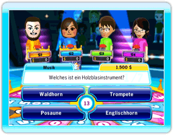
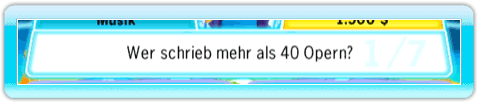
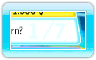
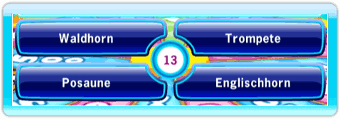

14 |
Anzeigeelemente |
 |
|

Die Hand ist dein Cursor. Die Zahl auf der Hand steht für die Spielernummer (Spieler 1 bis Spieler 4). Die Hand gibt an, wohin die Wii-Fernbedienung zeigt. Im Minispiel Taschenlampe verwendest du die Wii-Fernbedienung wie eine Taschenlampe und der Cursor ist ein Ring, in dem du die entsprechende Stelle der ansonsten schwarzen Felder sehen kannst. Je nach Spieler ist die Farbe des Rings unterschiedlich:
In der Mitte, zwischen den Antwort-Feldern, wird die Zeit angezeigt, die dir noch zur Beantwortung der Frage bleibt.
Links oben am Fragen-Feld wird die Kategorie der aktuellen Frage angezeigt.
Rechts oben am Fragen-Feld wird der Betrag angezeigt, den du erhältst, wenn du als Erster die Frage richtig beantwortest.
 Im Fragen-Feld wird die aktuelle Frage angezeigt.
 Im Fragen-Feld wird im Hintergrund die Anzahl der beantworteten Fragen im Verhältnis zur Gesamtzahl der Fragen der aktuellen Runde angezeigt.
 Für die meisten Fragen erhältst du 4 mögliche Antworten. Wähle die, die dir richtig erscheint.
Wahr-oder-falsch-Fragen haben 2 mögliche Antworten. (Das Häkchen steht für wahr, das X für falsch.) Wähle auch hier die, die dir richtig erscheint. |


 |
 |
 |